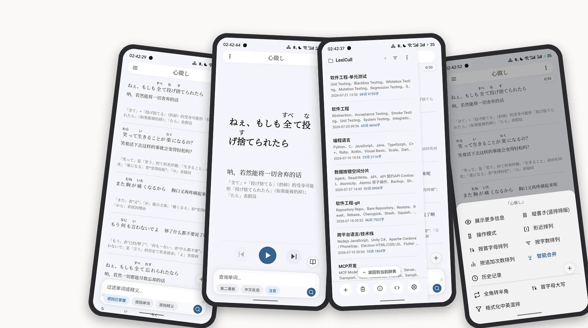
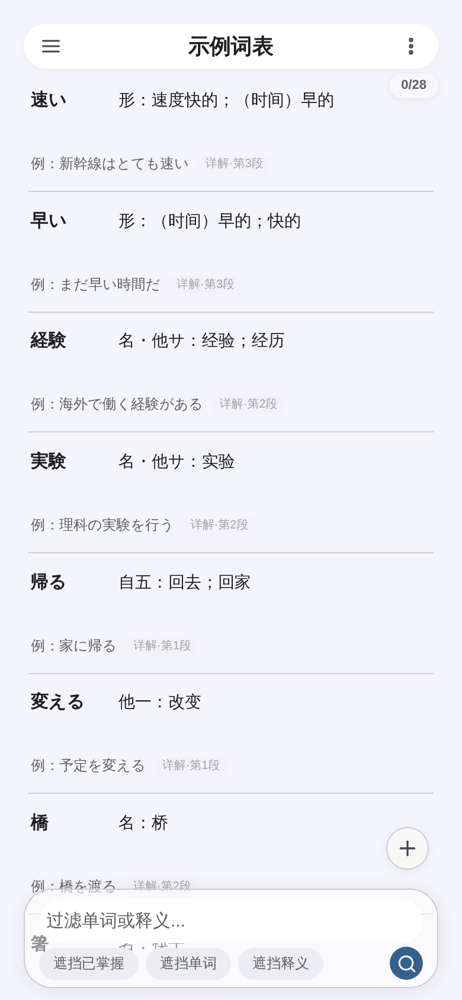
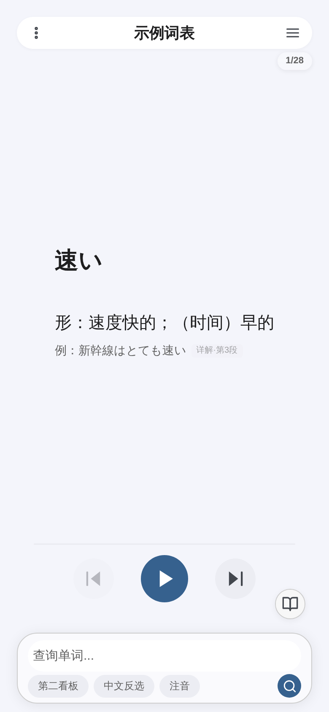
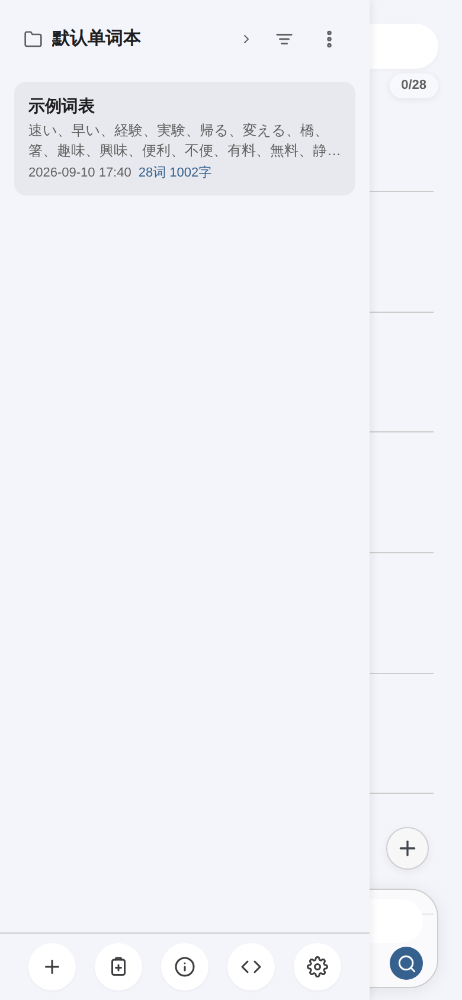
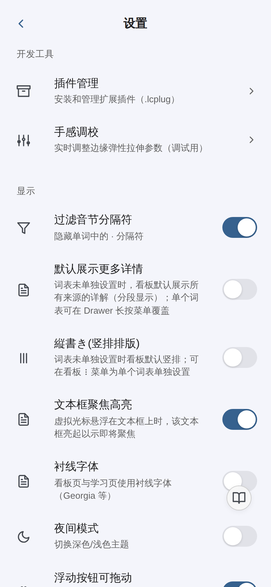

打造易用可靠的个人辞书应用。不止于背单词 —— 收录、整理、比对、回顾你的专属词库。
Android 7.0 及以上 · 词库数据全部保存在本机 · 无需注册账号 · 30 天全功能试用
固定链接，始终指向最新版

LexiCull 是一个纯离线的个人辞书应用。它把「收词 → 整理 → 比对 → 回顾」做成一条完整链路：你把任意文本喂给它，它解析成结构化辞条，排成一本可以长期翻阅的辞书 —— 而不是只给你一个背单词的进度条。
它还原纸质辞书的排版与翻阅体验 —— 词典印刷风格的看板、词条级别的精准编辑、形近词自动相邻排列，并支持 Android 与 Web 双端使用。
适合：日语等外语的例句与生词积累、读书笔记里的术语收藏、任何需要「按自己的方式整理词条」的场景。
不止于此。
第一步 把文章连同下面这段提示词一起发给任意 AI（DeepSeek、ChatGPT 等）：
请把这篇文章拆解为可导入 LexiCull 的 CSV（每行一条辞条，4 列，逗号或 Tab 分隔）： 1. 辞条：单词、概念、术语，可高度抽象概括 2. 释义：简洁易懂的解释，可省略次要信息 3. 详解：更详细的解释，允许适度冗余；多个独立部分之间用 |||（三个管道符）分隔 4. 补充：读音、标签等补充信息，可有可无，留空不影响理解 直接输出 CSV，不要多余解释。
第二步 复制 AI 输出的 CSV，回到 App 点「粘贴文本，智能收录」，自动拆成辞条。
第三步 筛查 —— 熟悉的筛掉，生疏的使劲背。
App 内引导弹窗提供同一份提示词与一键复制；也可以点「载入示例词表」先看看成品长什么样。




看板（词典印刷风格排版） · 背诵页 · 辞表抽屉 · 设置页
他们以文档作为信息载体，LexiCull 以词条作为信息载体，便于个人维护和检索。
他们搞的是固定课程，还有遗忘曲线一类的东西。LexiCull 专注于检索和筛查，可以导入单词，也可以导入技术名词 —— 你搞面向印度的外贸，拿来管理种姓相关的知识也没问题。给熟悉的筛掉，使劲背不熟悉的知识才有效率。
也不是所有词条都得手敲，用 LLM 一键生成才是推荐的方式。词条这种结构更便于你批判它 —— 现在的人类就差不多剩批判的本事比 AI 强了。LexiCull 为筛查、检索和记忆服务，同时允许 Agent 通过 MCP 读取你的辞条：可以迅速检索并复制某个技术名词以精确与 LLM 沟通，本地 Agent 也可读取你的个人知识储备，更高效地协作工作。
个人场景文档维护成本高（大部分人根本不会亲手维护文档，LLM 全量吞吐之后文档会逐渐失真），手动检索也不方便，而且自己很容易读不下去。LexiCull 的辞条场景下，能够让你专注地阅读数万字的陌生领域的知识。
艾宾浩斯搞的记忆研究针对的是没有意义的内容，套用到知识学习上噱头大于科学。LexiCull 不搞记忆曲线：某些知识你看完、筛查完，感觉差不多就得了，下次遇到再筛再记的意义，远大于哄着你每天看十几个名词。
安装包需要 Android 7.0 及以上，首次安装需允许「安装未知来源应用」；无需注册账号。换手机或重装时，用「设置 → 备份」导出 ZIP 或上传 WebDAV 再导入即可。词库、进度与设置全部保存在本机，联网只用于获取授权许可，不传输任何词条内容。
首次安装起 30 天全功能试用，试用期内完全静默，不弹任何授权提示；到期后自动联网获取许可即可继续使用，对正常用户无感。
长期离线或许可到期时会进入只读模式：仍可浏览、检索、导出备份，数据不会被锁死或删除，恢复联网后即回到正常使用。
当前为 β 测试版，问题与建议欢迎提交到 Issues。
| 安装包 | LexiCull-v1.0-b2717.apk（1.18 MB） |
|---|---|
| 当前版本 | v1.0 build 2717（2026-09-10） |
| 固定链接 | releases/latest/download/LexiCull.apk（始终指向最新版） |
| 本版直链 | LexiCull-v1.0-b2717.apk |
| SHA-256 | 5787bfd20379479818071d534e92c45517c5f5fbc327a4ac43b069af50a6bfec |
| 系统要求 | Android 7.0（API 24）及以上；纯 WebView 壳、不含原生库，arm64 / armv7 / x86 机型通用 |
本仓库是唯一的官方分发渠道，其他来源的安装包可能被修改，不建议安装。LexiCull 另有 Web 版（单文件产物，开发者自用），此处只分发 Android 版。